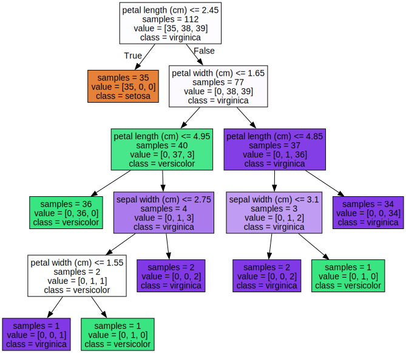
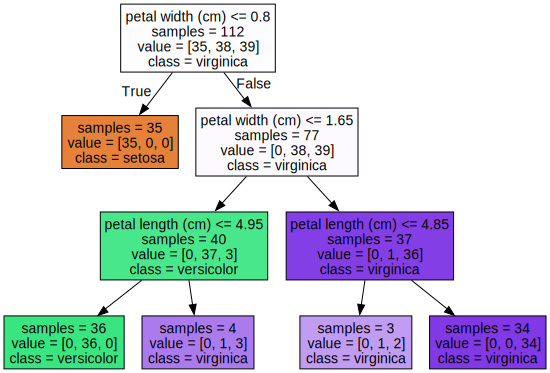
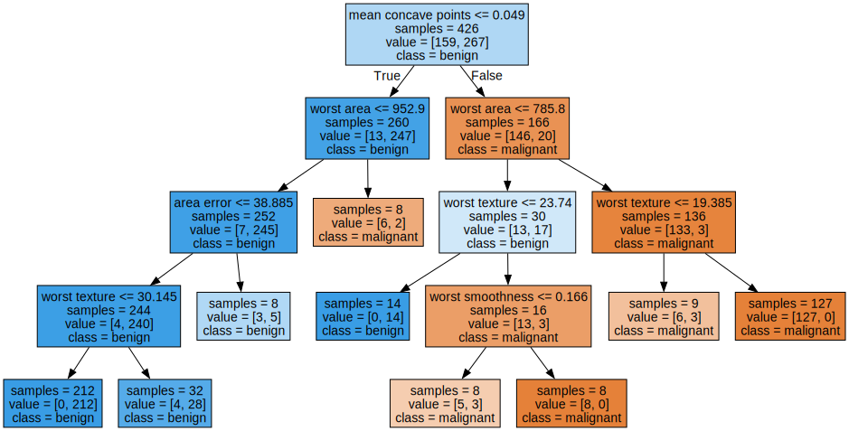

Aprendizaje Supervisado#
Vecinos mas cercanos.
Regularizacion: Lasso, Ridge.
Arboles de decision
SVM
Redes Neuronales
Vecinos más cercanos#
Importamos las librerías necesarias y los datos
%matplotlib notebook
import numpy as np
import matplotlib.pyplot as plt
import pandas as pd
from sklearn.model_selection import train_test_split
fruits = pd.read_table('Data/fruit_data_with_colors.txt')
fruits.head()
| fruit_label | fruit_name | fruit_subtype | mass | width | height | color_score | |
|---|---|---|---|---|---|---|---|
| 0 | 1 | apple | granny_smith | 192 | 8.4 | 7.3 | 0.55 |
| 1 | 1 | apple | granny_smith | 180 | 8.0 | 6.8 | 0.59 |
| 2 | 1 | apple | granny_smith | 176 | 7.4 | 7.2 | 0.60 |
| 3 | 2 | mandarin | mandarin | 86 | 6.2 | 4.7 | 0.80 |
| 4 | 2 | mandarin | mandarin | 84 | 6.0 | 4.6 | 0.79 |
# creamos una correspondencia entre la etiqueta y el nombre de la fruta por facilidad de lectura
lookup_fruit_name = dict(zip(fruits.fruit_label.unique(), fruits.fruit_name.unique()))
lookup_fruit_name
{1: 'apple', 2: 'mandarin', 3: 'orange', 4: 'lemon'}
El archivo contiene la masa, la altura y el ancho de una selección de naranjas, limones y manzanas. Las alturas se midieron a lo largo del corazón de la fruta.
Revisando los datos#
# grafico de una matriz scatter
from matplotlib import cm
X = fruits[['height', 'width', 'mass', 'color_score']]
y = fruits['fruit_label']
X_train, X_test, y_train, y_test = train_test_split(X, y, random_state=0)
scatter = pd.plotting.scatter_matrix(X_train, c= y_train, marker = 'o', s=40, hist_kwds={'bins':15}, figsize=(9,9))
# grafico de 3D scatter plot
from mpl_toolkits.mplot3d import Axes3D
fig = plt.figure()
ax = fig.add_subplot(111, projection = '3d')
ax.scatter(X_train['width'], X_train['height'], X_train['color_score'], c = y_train, marker = 'o', s=100)
ax.set_xlabel('Ancho')
ax.set_ylabel('Alto')
ax.set_zlabel('color_score')
plt.show()
Creamos los conjuntos de entrenamiento y prueba#
# Para este ejemplo, usamos las características de masa, ancho y alto de cada instancia de fruta.
X = fruits[['mass', 'width', 'height']]
y = fruits['fruit_label']
# default es 75% / 25% train-test split
X_train, X_test, y_train, y_test = train_test_split(X, y, random_state=0)
Creamos el objeto clasificador#
from sklearn.neighbors import KNeighborsClassifier
knn = KNeighborsClassifier(n_neighbors = 5)
Entrenamos el clasificador (ajustamos el modelo) en los datos de entrenamiento#
knn.fit(X_train, y_train)
KNeighborsClassifier()
Estimamos la precisión del clasificador usando los datos de prueba#
knn.score(X_test,y_test)
0.5333333333333333
Usar el clasificador para predecir datos no observados#
# primer ejemplo: una fruta pequeña con una masa de 20 g, ancho 4,3 cm, altura 5,5 cm
fruit_prediction = knn.predict([[20,4.3,5.5]])
print(fruit_prediction)
lookup_fruit_name[fruit_prediction[0]]
[2]
/Users/victormorales/opt/anaconda3/lib/python3.9/site-packages/sklearn/base.py:450: UserWarning: X does not have valid feature names, but KNeighborsClassifier was fitted with feature names
warnings.warn(
'mandarin'
Graficamos las fronteras de decisión de KNN#
from shared_utilities import plot_fruit_knn
plot_fruit_knn(X_train, y_train, 5, 'uniform') # elegimos 5 vecinos mas cercanos
¿Cuán sensible es la precisión de la clasificación K-NN a la elección de K?#
k_range = range(1,20)
scores = []
for k in k_range:
knn = KNeighborsClassifier(n_neighbors = k)
knn.fit(X_train, y_train)
scores.append(knn.score(X_test, y_test))
plt.figure()
plt.xlabel('k')
plt.ylabel('accuracy')
plt.scatter(k_range, scores)
plt.xticks([0,5,10,15,20]);
¿Cuán sensible es la precisión de la clasificación K-NN a la elección de la proporción de la partición?#
t = [0.8, 0.7, 0.6, 0.5, 0.4, 0.3, 0.2]
knn = KNeighborsClassifier(n_neighbors = 5)
plt.figure()
for s in t:
scores = []
for i in range(1,1000):
X_train, X_test, y_train, y_test = train_test_split(X, y, test_size = 1-s)
knn.fit(X_train, y_train)
scores.append(knn.score(X_test, y_test))
plt.plot(s, np.mean(scores), 'bo')
plt.xlabel('Training set proportion (%)')
plt.ylabel('accuracy');
Modelos lineales para regresión#
Regresión lineal#
# creamos un conjunto de datos para regresion
from sklearn.datasets import make_regression
plt.figure()
plt.title('Sample regression problem with one input variable')
X_R1, y_R1 = make_regression(n_samples = 100, n_features=1,
n_informative=1, bias = 150.0,
noise = 30, random_state=0)
plt.scatter(X_R1, y_R1, marker= 'o', s=50)
plt.show()
from sklearn.linear_model import LinearRegression
X_train, X_test, y_train, y_test = train_test_split(X_R1, y_R1,
random_state = 0)
linreg = LinearRegression().fit(X_train, y_train)
print('linear model coeff (w): {}'
.format(linreg.coef_))
print('linear model intercept (b): {:.3f}'
.format(linreg.intercept_))
print('R-squared score (training): {:.3f}'
.format(linreg.score(X_train, y_train)))
print('R-squared score (test): {:.3f}'
.format(linreg.score(X_test, y_test)))
linear model coeff (w): [45.70870465]
linear model intercept (b): 148.446
R-squared score (training): 0.679
R-squared score (test): 0.492
Regresion lineal: un gráfico#
plt.figure(figsize=(5,4))
plt.scatter(X_R1, y_R1, marker= 'o', s=50, alpha=0.8)
plt.plot(X_R1, linreg.coef_ * X_R1 + linreg.intercept_, 'r-')
plt.title('Least-squares linear regression')
plt.xlabel('Feature value (x)')
plt.ylabel('Target value (y)')
plt.show()
Si tienes problemas con la instalación de graphviz, visita https://pygraphviz.github.io/documentation/stable/install.html
from shared_utilities import load_crime_dataset
# Comunidades y dataset de crimen
(X_crime, y_crime) = load_crime_dataset()
X_train, X_test, y_train, y_test = train_test_split(X_crime, y_crime,
random_state = 0)
linreg = LinearRegression().fit(X_train, y_train)
print('Crime dataset')
print('linear model intercept: {}'
.format(linreg.intercept_))
print('linear model coeff:\n{}'
.format(linreg.coef_))
print('R-squared score (training): {:.3f}'
.format(linreg.score(X_train, y_train)))
print('R-squared score (test): {:.3f}'
.format(linreg.score(X_test, y_test)))
Crime dataset
linear model intercept: -1728.130672602318
linear model coeff:
[ 1.61892346e-03 -9.43009110e+01 1.36067510e+01 -3.13380670e+01
-8.15482721e-02 -1.69455128e+01 -2.42730375e-03 1.53013232e+00
-1.39193248e-02 -7.72112833e+00 2.28112354e+01 -5.65708295e+00
9.34751364e+00 2.06969566e-01 -7.43413626e+00 9.65856476e-03
4.38030290e-03 4.79754625e-03 -4.46469212e+00 -1.60907140e+01
8.82778012e+00 -5.06734503e-01 -1.42198055e+00 8.17551991e+00
-3.87048268e+00 -3.54209213e+00 4.48758304e+00 9.30645715e+00
1.73644996e+02 1.18220766e+01 1.51120836e+02 -3.29613007e+02
-1.35343395e+02 6.95380108e-01 -2.38369008e+01 2.77038981e+00
3.82248925e-01 4.38813358e+00 -1.06410851e+01 -4.92294176e-03
4.14031827e+01 -1.16206866e-03 1.18568968e+00 1.75418465e+00
-3.68283678e+00 1.59679443e+00 -8.42180230e+00 -3.79703897e+01
4.74076990e+01 -2.50768374e+01 -2.88246410e-01 -3.65633234e+01
1.89516080e+01 -4.53336736e+01 6.82698598e+02 1.04478671e+02
-3.28575414e+02 -3.14364068e+01 2.74053494e+01 5.12336432e+00
6.91580764e+01 1.98267157e-02 -6.12133638e-01 2.65335065e+01
1.00704633e+01 -1.58621594e+00 2.24025322e+00 7.38288450e+00
-3.13915504e+01 -9.78145367e-05 5.01970945e-05 -3.48030622e-04
-2.50254726e-04 -5.26610456e-01 -5.16564774e-01 -4.10464090e-01
1.16146367e-01 1.46167357e+00 -3.04019816e-01 2.43792841e+00
-3.65615457e+01 1.41488917e-01 2.88800603e-01 1.77464865e+01
5.96587698e-01 1.98257510e+00 -1.36380442e-01 -1.85303461e+00]
R-squared score (training): 0.673
R-squared score (test): 0.496
Regresión Ridge#
from sklearn.linear_model import Ridge
X_train, X_test, y_train, y_test = train_test_split(X_crime, y_crime,
random_state = 0)
linridge = Ridge(alpha=20.0).fit(X_train, y_train)
print('Crime dataset')
print('ridge regression linear model intercept: {}'
.format(linridge.intercept_))
print('ridge regression linear model coeff:\n{}'
.format(linridge.coef_))
print('R-squared score (training): {:.3f}'
.format(linridge.score(X_train, y_train)))
print('R-squared score (test): {:.3f}'
.format(linridge.score(X_test, y_test)))
print('Number of non-zero features: {}'
.format(np.sum(linridge.coef_ != 0)))
Crime dataset
ridge regression linear model intercept: -3352.4230358463437
ridge regression linear model coeff:
[ 1.95091438e-03 2.19322667e+01 9.56286607e+00 -3.59178973e+01
6.36465325e+00 -1.96885471e+01 -2.80715856e-03 1.66254486e+00
-6.61426604e-03 -6.95450680e+00 1.71944731e+01 -5.62819154e+00
8.83525114e+00 6.79085746e-01 -7.33614221e+00 6.70389803e-03
9.78505502e-04 5.01202169e-03 -4.89870524e+00 -1.79270062e+01
9.17572382e+00 -1.24454193e+00 1.21845360e+00 1.03233089e+01
-3.78037278e+00 -3.73428973e+00 4.74595305e+00 8.42696855e+00
3.09250005e+01 1.18644167e+01 -2.05183675e+00 -3.82210450e+01
1.85081589e+01 1.52510829e+00 -2.20086608e+01 2.46283912e+00
3.29328703e-01 4.02228467e+00 -1.12903533e+01 -4.69567413e-03
4.27046505e+01 -1.22507167e-03 1.40795790e+00 9.35041855e-01
-3.00464253e+00 1.12390514e+00 -1.82487653e+01 -1.54653407e+01
2.41917002e+01 -1.32497562e+01 -4.20113118e-01 -3.59710660e+01
1.29786751e+01 -2.80765995e+01 4.38513476e+01 3.86590044e+01
-6.46024046e+01 -1.63714023e+01 2.90397330e+01 4.15472907e+00
5.34033563e+01 1.98773191e-02 -5.47413979e-01 1.23883518e+01
1.03526583e+01 -1.57238894e+00 3.15887097e+00 8.77757987e+00
-2.94724962e+01 -2.33454302e-04 3.13528914e-04 -4.13169509e-04
-1.80309962e-04 -5.74054525e-01 -5.17742507e-01 -4.20670933e-01
1.53383596e-01 1.32725423e+00 3.84863158e+00 3.03024594e+00
-3.77692644e+01 1.37933464e-01 3.07676522e-01 1.57128807e+01
3.31418306e-01 3.35994414e+00 1.61265911e-01 -2.67619878e+00]
R-squared score (training): 0.671
R-squared score (test): 0.494
Number of non-zero features: 88
Regresión Ridge con variables normalizadas#
from sklearn.preprocessing import MinMaxScaler
scaler = MinMaxScaler()
from sklearn.linear_model import Ridge
X_train, X_test, y_train, y_test = train_test_split(X_crime, y_crime,
random_state = 0)
X_train_scaled = scaler.fit_transform(X_train)
X_test_scaled = scaler.transform(X_test)
linridge = Ridge(alpha=20.0).fit(X_train_scaled, y_train)
print('Crime dataset')
print('ridge regression linear model intercept: {}'
.format(linridge.intercept_))
print('ridge regression linear model coeff:\n{}'
.format(linridge.coef_))
print('R-squared score (training): {:.3f}'
.format(linridge.score(X_train_scaled, y_train)))
print('R-squared score (test): {:.3f}'
.format(linridge.score(X_test_scaled, y_test)))
print('Number of non-zero features: {}'
.format(np.sum(linridge.coef_ != 0)))
Crime dataset
ridge regression linear model intercept: 933.3906385044156
ridge regression linear model coeff:
[ 88.68827454 16.48947987 -50.30285445 -82.90507574 -65.89507244
-2.27674244 87.74108514 150.94862182 18.8802613 -31.05554992
-43.13536109 -189.44266328 -4.52658099 107.97866804 -76.53358414
2.86032762 34.95230077 90.13523036 52.46428263 -62.10898424
115.01780357 2.66942023 6.94331369 -5.66646499 -101.55269144
-36.9087526 -8.7053343 29.11999068 171.25963057 99.36919476
75.06611841 123.63522539 95.24316483 -330.61044265 -442.30179004
-284.49744001 -258.37150609 17.66431072 -101.70717151 110.64762887
523.13611718 24.8208959 4.86533322 -30.46775619 -3.51753937
50.57947231 10.84840601 18.27680946 44.11189865 58.33588176
67.08698975 -57.93524659 116.1446052 53.81163718 49.01607711
-7.62262031 55.14288543 -52.08878272 123.39291017 77.12562171
45.49795317 184.91229771 -91.35721203 1.07975971 234.09267451
10.3887921 94.7171829 167.91856631 -25.14025088 -1.18242839
14.60362467 36.77122659 53.19878339 -78.86365997 -5.89858411
26.04790298 115.1534917 68.74143311 68.28588166 16.5260514
-97.90513652 205.20448474 75.97304123 61.3791085 -79.83157049
67.26700741 95.67094538 -11.88380569]
R-squared score (training): 0.615
R-squared score (test): 0.599
Number of non-zero features: 88
Regresión Ridge con parámetro de regularización alpha#
print('Ridge regression: effect of alpha regularization parameter\n')
for this_alpha in [0, 1, 10, 20, 50, 100, 1000]:
linridge = Ridge(alpha = this_alpha).fit(X_train_scaled, y_train)
r2_train = linridge.score(X_train_scaled, y_train)
r2_test = linridge.score(X_test_scaled, y_test)
num_coeff_bigger = np.sum(abs(linridge.coef_) > 1.0)
print('Alpha = {:.2f}\nnum abs(coeff) > 1.0: {}, \
r-squared training: {:.2f}, r-squared test: {:.2f}\n'
.format(this_alpha, num_coeff_bigger, r2_train, r2_test))
Ridge regression: effect of alpha regularization parameter
Alpha = 0.00
num abs(coeff) > 1.0: 88, r-squared training: 0.67, r-squared test: 0.50
Alpha = 1.00
num abs(coeff) > 1.0: 87, r-squared training: 0.66, r-squared test: 0.56
Alpha = 10.00
num abs(coeff) > 1.0: 87, r-squared training: 0.63, r-squared test: 0.59
Alpha = 20.00
num abs(coeff) > 1.0: 88, r-squared training: 0.61, r-squared test: 0.60
Alpha = 50.00
num abs(coeff) > 1.0: 86, r-squared training: 0.58, r-squared test: 0.58
Alpha = 100.00
num abs(coeff) > 1.0: 87, r-squared training: 0.55, r-squared test: 0.55
Alpha = 1000.00
num abs(coeff) > 1.0: 84, r-squared training: 0.31, r-squared test: 0.30
Regresión Lasso#
from sklearn.linear_model import Lasso
from sklearn.preprocessing import MinMaxScaler
scaler = MinMaxScaler()
X_train, X_test, y_train, y_test = train_test_split(X_crime, y_crime,
random_state = 0)
X_train_scaled = scaler.fit_transform(X_train)
X_test_scaled = scaler.transform(X_test)
linlasso = Lasso(alpha=2.0, max_iter = 10000).fit(X_train_scaled, y_train)
print('Crime dataset')
print('lasso regression linear model intercept: {}'
.format(linlasso.intercept_))
print('lasso regression linear model coeff:\n{}'
.format(linlasso.coef_))
print('Non-zero features: {}'
.format(np.sum(linlasso.coef_ != 0)))
print('R-squared score (training): {:.3f}'
.format(linlasso.score(X_train_scaled, y_train)))
print('R-squared score (test): {:.3f}\n'
.format(linlasso.score(X_test_scaled, y_test)))
print('Features with non-zero weight (sorted by absolute magnitude):')
for e in sorted (list(zip(list(X_crime), linlasso.coef_)),
key = lambda e: -abs(e[1])):
if e[1] != 0:
print('\t{}, {:.3f}'.format(e[0], e[1]))
Crime dataset
lasso regression linear model intercept: 1186.612061998579
lasso regression linear model coeff:
[ 0. 0. -0. -168.18346054
-0. -0. 0. 119.6938194
0. -0. 0. -169.67564456
-0. 0. -0. 0.
0. 0. -0. -0.
0. -0. 0. 0.
-57.52991966 -0. -0. 0.
259.32889226 -0. 0. 0.
0. -0. -1188.7396867 -0.
-0. -0. -231.42347299 0.
1488.36512229 0. -0. -0.
-0. 0. 0. 0.
0. 0. -0. 0.
20.14419415 0. 0. 0.
0. 0. 339.04468804 0.
0. 459.53799903 -0. 0.
122.69221826 -0. 91.41202242 0.
-0. 0. 0. 73.14365856
0. -0. 0. 0.
86.35600042 0. 0. 0.
-104.57143405 264.93206555 0. 23.4488645
-49.39355188 0. 5.19775369 0. ]
Non-zero features: 20
R-squared score (training): 0.631
R-squared score (test): 0.624
Features with non-zero weight (sorted by absolute magnitude):
PctKidsBornNeverMar, 1488.365
PctKids2Par, -1188.740
HousVacant, 459.538
PctPersDenseHous, 339.045
NumInShelters, 264.932
MalePctDivorce, 259.329
PctWorkMom, -231.423
pctWInvInc, -169.676
agePct12t29, -168.183
PctVacantBoarded, 122.692
pctUrban, 119.694
MedOwnCostPctIncNoMtg, -104.571
MedYrHousBuilt, 91.412
RentQrange, 86.356
OwnOccHiQuart, 73.144
PctEmplManu, -57.530
PctBornSameState, -49.394
PctForeignBorn, 23.449
PctLargHouseFam, 20.144
PctSameCity85, 5.198
Regresión Lasso con parámetro de regularización alpha#
print('Lasso regression: effect of alpha regularization\n\
parameter on number of features kept in final model\n')
for alpha in [0.5, 1, 2, 3, 5, 10, 20, 50]:
linlasso = Lasso(alpha, max_iter = 10000).fit(X_train_scaled, y_train)
r2_train = linlasso.score(X_train_scaled, y_train)
r2_test = linlasso.score(X_test_scaled, y_test)
print('Alpha = {:.2f}\nFeatures kept: {}, r-squared training: {:.2f}, \
r-squared test: {:.2f}\n'
.format(alpha, np.sum(linlasso.coef_ != 0), r2_train, r2_test))
Lasso regression: effect of alpha regularization
parameter on number of features kept in final model
Alpha = 0.50
Features kept: 35, r-squared training: 0.65, r-squared test: 0.58
Alpha = 1.00
Features kept: 25, r-squared training: 0.64, r-squared test: 0.60
Alpha = 2.00
Features kept: 20, r-squared training: 0.63, r-squared test: 0.62
Alpha = 3.00
Features kept: 17, r-squared training: 0.62, r-squared test: 0.63
Alpha = 5.00
Features kept: 12, r-squared training: 0.60, r-squared test: 0.61
Alpha = 10.00
Features kept: 6, r-squared training: 0.57, r-squared test: 0.58
Alpha = 20.00
Features kept: 2, r-squared training: 0.51, r-squared test: 0.50
Alpha = 50.00
Features kept: 1, r-squared training: 0.31, r-squared test: 0.30
Árboles de decisión#
from sklearn.datasets import load_iris
from sklearn.tree import DecisionTreeClassifier
from shared_utilities import plot_decision_tree
from sklearn.model_selection import train_test_split
iris = load_iris()
X_train, X_test, y_train, y_test = train_test_split(iris.data, iris.target, random_state = 3)
clf = DecisionTreeClassifier().fit(X_train, y_train)
print('Accuracy of Decision Tree classifier on training set: {:.2f}'
.format(clf.score(X_train, y_train)))
print('Accuracy of Decision Tree classifier on test set: {:.2f}'
.format(clf.score(X_test, y_test)))
Accuracy of Decision Tree classifier on training set: 1.00
Accuracy of Decision Tree classifier on test set: 0.97
Establecer la profundidad máxima del árbol de decisión para ayudar a evitar el sobreajuste#
clf2 = DecisionTreeClassifier(max_depth = 3).fit(X_train, y_train)
print('Accuracy of Decision Tree classifier on training set: {:.2f}'
.format(clf2.score(X_train, y_train)))
print('Accuracy of Decision Tree classifier on test set: {:.2f}'
.format(clf2.score(X_test, y_test)))
Accuracy of Decision Tree classifier on training set: 0.98
Accuracy of Decision Tree classifier on test set: 0.97
Visualizando árboles de decisión#
plot_decision_tree(clf, iris.feature_names, iris.target_names)

Versión Pre-pruned (max_depth = 3)#
plot_decision_tree(clf2, iris.feature_names, iris.target_names)

Feature importance#
from shared_utilities import plot_feature_importances
plt.figure(figsize=(10,4), dpi=80)
plot_feature_importances(clf, iris.feature_names)
plt.show()
print('Feature importances: {}'.format(clf.feature_importances_))
Feature importances: [0. 0.02457904 0.54643762 0.42898334]
from sklearn.tree import DecisionTreeClassifier
from shared_utilities import plot_class_regions_for_classifier_subplot
X_train, X_test, y_train, y_test = train_test_split(iris.data, iris.target, random_state = 0)
fig, subaxes = plt.subplots(6, 1, figsize=(6, 32))
pair_list = [[0,1], [0,2], [0,3], [1,2], [1,3], [2,3]]
tree_max_depth = 4
for pair, axis in zip(pair_list, subaxes):
X = X_train[:, pair]
y = y_train
clf = DecisionTreeClassifier(max_depth=tree_max_depth).fit(X, y)
title = 'Decision Tree, max_depth = {:d}'.format(tree_max_depth)
plot_class_regions_for_classifier_subplot(clf, X, y, None,
None, title, axis,
iris.target_names)
axis.set_xlabel(iris.feature_names[pair[0]])
axis.set_ylabel(iris.feature_names[pair[1]])
plt.tight_layout()
plt.show()
Ejemplo#
from sklearn.datasets import load_breast_cancer
cancer = load_breast_cancer()
(X_cancer, y_cancer) = load_breast_cancer(return_X_y = True)
from sklearn.tree import DecisionTreeClassifier
from shared_utilities import plot_decision_tree
from shared_utilities import plot_feature_importances
X_train, X_test, y_train, y_test = train_test_split(X_cancer, y_cancer, random_state = 0)
clf = DecisionTreeClassifier(max_depth = 4, min_samples_leaf = 8,
random_state = 0).fit(X_train, y_train)
plot_decision_tree(clf, cancer.feature_names, cancer.target_names)

print('Breast cancer dataset: decision tree')
print('Accuracy of DT classifier on training set: {:.2f}'
.format(clf.score(X_train, y_train)))
print('Accuracy of DT classifier on test set: {:.2f}'
.format(clf.score(X_test, y_test)))
plt.figure(figsize=(10,6),dpi=80)
plot_feature_importances(clf, cancer.feature_names)
plt.tight_layout()
plt.show()
Breast cancer dataset: decision tree
Accuracy of DT classifier on training set: 0.96
Accuracy of DT classifier on test set: 0.94